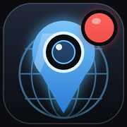

CamPit
/
Live only
Flock
Monitor
Sources
Cameras
Power plants
+
−
Loading cameras…
×

Install CamPit
Get it on your Home Screen, like any app. Free, no App Store.
Tap
Share
at the bottom of Safari
Scroll down and tap
Add to Home Screen
Tap
Add
, then open CamPit from your Home Screen
Drag a box over the cameras you want on the wall ·
Esc
to cancel
Monitor
Columns
Auto
1
2
3
4
5
6
8
Refresh
5 s
10 s
30 s
60 s
Play video
Save wall
Close
Esc
Flock ALPR camera
Open in Google Maps
Full screen
Close
Esc